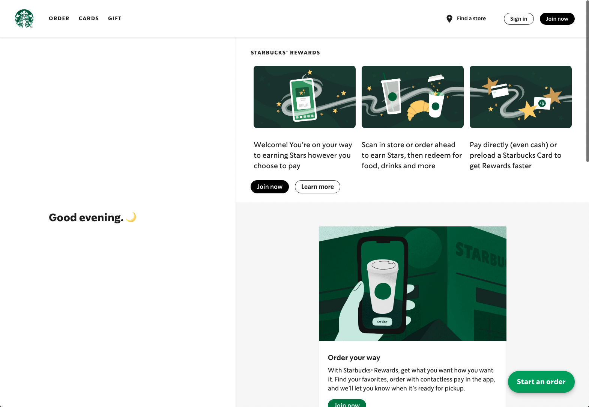

Related Projects Review
HttpTrigger Azure Function example -- DataCleaning Pipeline:
(https://github.com/Azure-Samples/functions-python-data-cleaning-pipeline)
The project demonstrates how to use the url of the request as a trigger to simulate the azure function. For our EventGrid Trigger Azure Function, they are highly similar in some ways. The event detected by our azure function contains the url of the request as a property. Thus, by looking at this example, it gives a clear introduction on how to start writing our own function.
Progressive Web App example -- Starbucks PWA: (https://app.starbucks.com/)
Mean features: Order, get shop info, manage payments etc...
Not a database orientated PWA, however, we can learn lots of things from it. It is 99% similar to Starbucks’ iOS app. It can runs in offline mode, which means users can choose and customise their product even without internet connection. Once they are online, they can directly order the drinks they like with other special customisation from them. The purpose of PWA is to enable web-services, letting customers with desktops or laptops be able to order. Also, if a user does not have a mobile app, they can just go to the website and run the PWA without any installations, which brings convenience.
Technology Review
The mission of Project 15 is to empower conservationists and data scientists to capture and analyse data for preserving endangered species and the ecosystem.
To address the issue, we first had to collect the data relevant to our use case, and make it easily accessible for data scientists and understandable for users with no CS background. Then, we had to find a way to display the data such that it's easy to understand, but also provides relevant insights.
Handling data
Different ocean datasets (such as CTD, OSD, MBT) can be found on the NOAA website, but they come into a format that it's hard to access. Users have to download the file, decompress it, and then use a software package that converts it into a CSV file. Given that each dataset type gives details of around 90 features (such as water temperature, salinity, depth, ...), using the pre-write C-code was a reasonable decision. Because our data processing solution was written in Python, we had to make small changes to make the above-mentioned C program easy to run from the main Python.
Other datasets relevant to the Saint Lucia use case can be downloaded in CSV formats from https://data.govt.lc/search/type/dataset.
To filter the data to be specific to Saint Lucia we could easily use an existing API such as https://geocode.xyz/api, which given a pair of latitude and longitude, returns more details about the location, such as it's country and region. While this was easy to use, a free account would only process 1 request per second, resulting in a high efficiency cost. A better approach was to define a polygon around the desired country (in our case, Saint Lucia) and implement a point-in-polygon math algorithm to check the validity of a location. Apart from efficiency, this solution is extendable, as data can be filtered around any region.
Additionally, the time range of the weather data was not compatible with the one for ocean data. Thus, we implemented a machine learning SVM prediction algorithm for completing the dataset. Other alternatives considered were linear regression and neural networks. The first was too simple for our use-case whereas the second one required a much bigger amount of data compared to our resources.
We chose to upload data to Azure Blob Storage and store it in Azure Cosmos DB [1]. Alternatives considered were Azure Data Lake, Azure Synapse, but we have found out that using Azure Blob Storage is rather cost effective. Additionally, after discussion with Microsoft team, the project does not acquire using SQL to analyse the data because the project' clients are non computer scientists. In which Azure Data Lake and Azure Synapse supports SQL analysis. Thus, we chose to use Azure Blob Storage and Azure Cosmos DB for our project.
Displaying data
To provide insights and analytics from the data, we decided to build a Progressive Web App (PWA). PWAs are progressively enhanced web apps that include features such as installation, offline support and push notifications. Alternatively, we could have implemented a simple web or mobile application, but that would have meant restricting the possible users to Android, Apple or web users.
The PWA is hosted using Node and implemented in Vanilla JavaScript. Because the application serves as a means of visualization, we decided that using a JS framework such as React will make the project unnecessarily more complex and consequently less flexible.
To connect the data with the PWA without inefficiently storing it in the browser, we implemented a Python API. By analysing potential frameworks from https://rapidapi.com/blog/best-python-api-frameworks/, we decided to use Flaks instead of Django because it's fast, highly performant and doesn't require additional dependencies.
For implementing the table and graphs that shows or data, originally we planned to write the relative JavaScripts and CSS by myself, however it involves a huge amount of work. As we dug deeply into this, we found out that there are open-source JavaScript and CSS libraries available online. For some of the HTML elements and the table, we chose Bootstrap [2], a popular front-end open source toolkit for web development to define the functionalities and themes. There are other tools like Bootstrap, however, Bootstrap uses easily understandable explanation language and codes so it is easy to use. Also, it is widely used by tons of developers and has a good reputation, we don’t need to worry about the stability and availability of it. Because if our JS library lacks maintenance, our product may be in danger as well with a high rate of potential bugs. As for the graph view, we used Plotly.js [3]. Similar to Bootstrap, it is open-source, but only a JS file. There is another choice which is Chart.js. However, it is harder to use compared to plotly.js, and does not have clear instructions of particular graphs. On the other hand, each individual type of graphs from Plotly.js (like bar chart, pie chart etc.) have specific code examples that are easy to understand, which make us easier to manage and maintain the code in the future.
Summary of Technical Decisions
The data pipeline was implemented in Python. Depending on the file type, the parsing stage uses file handling python modules (such as json, csv, gzip) and the C program to parse the data into JSON formats. The pre-processing and processing stages use the pandas library to manipulate data. The machine learning script, which augments the dataset with weather information, leverages the scikit-learn package to build the prediction model and the math and statistics modules for normalizing data.
Uploading and storing the data was implemented in Python. After the datasets are parsed into JSON objects, the code uses azure.storage.blob to upload them to Azure Blob Storage inside a container under the storage account connected to the code. The azure function detects the change within Blob Storage, and therefore automatically converts the created blob into a table storage with the table entities equal to each content in JSON objects.
For uploading and storing the data, the transfer of data from the database to the visualization platform was implemented as a Python Flask API.
The visualization platform was designed as a JavaScript progressive web app hosted with NodeJS. For authenticating users, we used the pwa-auth web component. To display information on the map, we used the Azure Maps client-side JavaScript library. For the table and graph visualizations, we used Bootstrap and plotly.js.
References
Microsoft pages -- Azure functions and Blob Storage
[1]
This two links instruct us how to use the azure library in Python to upload blobs and how to create an own azure function and deploy it.
Available:
https://docs.microsoft.com/en-us/azure/azure-functions/functions-bindings-event-grid-trigger?tabs=python%2Cbash
https://docs.microsoft.com/en-us/azure/storage/blobs/storage-quickstart-blobs-python
[Accessed: November 15, 2020].
Bootstrap
[2]
Bootstrap is an open-source website that provides tons of JavaScript and CSS libraries for html related coding.
Available:
https://getbootstrap.com/
[Accessed: February 24, 2021].
Plotly
[3]
Plotly.js offers different types of graphs, easy to deploy and customise things.
Available:
https://plotly.com/
[Accessed: February 26, 2021].